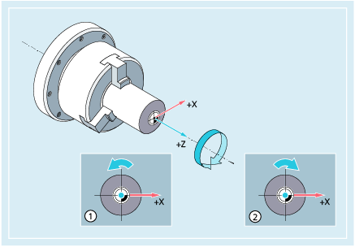
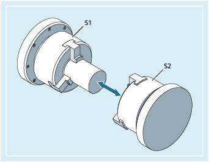

Die Angaben Spindeldrehzahl und -drehrichtung versetzen die Spindel in eine Drehbewegung und schaffen die Voraussetzung für die spanabhebende Bearbeitung.
① | Spindeldrehrichtung rechts (in der Standardeinstellung) |
② | Spindeldrehrichtung links (in der Standardeinstellung) |
Neben der Hauptspindel können weitere Spindeln vorhanden sein (z. B. bei Drehmaschinen die Gegenspindel oder ein angetriebenes Werkzeug). In der Regel wird die Hauptspindel per Maschinendatum als Masterspindel deklariert. Diese Zuweisung kann per NC-Befehl geändert werden.
S... / S<n>=...
M3 / M<n>=3
M4 / M<n>=4
M5 / M<n>=5
| SETMS(<n>) | |
| ... | |
| SETMS |
| Spindeldrehzahl für die Masterspindel | |
Einheit: | r/min | |
| Spindeldrehzahl für Spindel <n> | |
Einheit: | r/min | |
Hinweis: | ||
| Spindeldrehrichtung rechts für Masterspindel | |
| Spindeldrehrichtung rechts für Spindel <n> | |
| Spindeldrehrichtung links für Masterspindel | |
| Spindeldrehrichtung links für Spindel <n> | |
| Spindel-Halt für Masterspindel | |
| Spindel-Halt für Spindel <n> | |
| Spindel <n> soll als Masterspindel gelten | |
| SETMS ohne Spindelangabe schaltet auf die projektierte Masterspindel zurück | |
| Hinweis |
Pro NC-Satz dürfen maximal 3 S-Werte programmiert werden, z. B.:
|
| Hinweis |
SETMS muss in einem eigenen Satz stehen. |
S1 ist Masterspindel, S2 ist zweite Arbeitsspindel. Das Drehteil soll von 2 Seiten bearbeitet werden. Hierfür ist eine Aufteilung der Arbeitsschritte notwendig. Nach dem Abstechen nimmt die Synchroneinrichtung (S2) das Werkstück für die abstichseitige Bearbeitung auf. Hierzu wird diese Spindel S2 als Masterspindel definiert, für sie gilt dann G95.
| Programmcode | Kommentar |
|---|---|
| N10 S300 M3 | ; Drehzahl und Drehrichtung für Antriebsspindel = voreingestellte Masterspindel. |
| ... | ; Bearbeitung der rechten Werkstückseite. |
| N100 SETMS(2) | ; S2 ist jetzt Masterspindel. |
| N110 S400 G95 F… | ; Drehzahl für neue Masterspindel. |
| ... | ; Bearbeitung der linken Werkstückseite. |
| N160 SETMS | ; Zurückschalten auf Masterspindel S1. |
Siehe auch:
Spindeldrehzahl (S), Spindeldrehrichtung (M3, M4, M5): Weitere Informationen